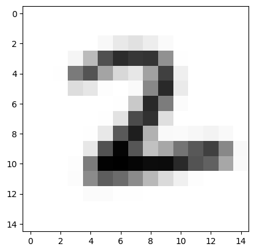

DMRG-like training of MPS
Contents
DMRG-like training of MPS#
Here we show how one can use MPS models to train via DMRG, as shown in [SS16’].
[ ]:
%mkdir data
%mkdir models
[1]:
import torch
import torch.nn as nn
import torch.optim as optim
from torch.utils.data import DataLoader
import torchvision.transforms as transforms
import torchvision.datasets as datasets
import matplotlib.pyplot as plt
import tensorkrowch as tk
[2]:
device = torch.device('cpu')
if torch.cuda.is_available():
device = torch.device('cuda:0')
elif torch.backends.mps.is_available():
device = torch.device('mps:0')
else:
device = torch.device('cpu')
device
[2]:
device(type='cuda', index=0)
Dataset#
[3]:
# MNIST Dataset
dataset_name = 'mnist'
batch_size = 64
image_size = 15
input_size = image_size ** 2
num_classes = 10
transform = transforms.Compose([transforms.ToTensor(),
transforms.Resize(image_size, antialias=True),
])
# Load data
train_dataset = datasets.MNIST(root='data/',
train=True,
transform=transform,
download=True)
test_dataset = datasets.MNIST(root='data/',
train=False,
transform=transform,
download=True)
train_loader = DataLoader(dataset=train_dataset,
batch_size=batch_size,
shuffle=True)
test_loader = DataLoader(dataset=test_dataset,
batch_size=batch_size,
shuffle=True)
[4]:
random_sample = torch.randint(low=0, high=len(train_dataset), size=(1,)).item()
plt.imshow(train_dataset[random_sample][0].squeeze(0), cmap='Greys')
plt.show()
print(train_dataset[random_sample][1])

2
Define model#
[5]:
class MPS_DMRG(tk.models.MPSLayer):
def __init__(self, *args, **kwargs):
super().__init__(*args, **kwargs)
self.parameterize(set_param=False, override=True)
self.out_node.get_axis('input').name = 'output'
self.block_position = None
self.block_length = None
@property
def block(self):
if self.block_position is not None:
return self.mats_env[self.block_position]
return None
def merge_block(self, block_position, block_length):
if block_position + block_length > self.n_features:
raise ValueError(
f'Last position of the block ({block_position + block_length}) '
f'exceeds the range of MPS sites ({self.n_features})')
elif block_length < 1:
raise ValueError(
'`block_length` should be greater than or equal to 1')
if self.block_position is not None:
raise ValueError(
'Cannot create block if there is already a merged block')
block_nodes = self.mats_env[block_position:(block_position + block_length)]
block = block_nodes[0]
for node in block_nodes[1:]:
block = tk.contract_between_(block, node)
block = block.parameterize(True)
block.name = 'block'
self.block_position = block_position
self.block_length = block_length
self._mats_env = self._mats_env[:block_position] + [block] + \
self._mats_env[(block_position + block_length):]
def unmerge_block(self, side='right', rank=None, cum_percentage=None):
block = self.block
block_nodes = []
for i in range(self.block_length - 1):
node1_axes = block.axes[:2]
node2_axes = block.axes[2:]
node, block = tk.split_(block,
node1_axes,
node2_axes,
side=side,
rank=rank,
cum_percentage=cum_percentage)
block.get_axis('split').name = 'left'
node.get_axis('split').name = 'right'
node.name = f'mats_env_({self.block_position + i})'
block_nodes.append(node)
block.name = f'mats_env_({self.block_position + i + 1})'
block_nodes.append(block)
self._mats_env = self._mats_env[:self.block_position] + block_nodes + \
self._mats_env[(self.block_position + 1):]
self.block_position = None
self.block_length = None
def contract(self):
result_mats = []
for node in self.mats_env:
while any(['input' in name for name in node.axes_names]):
for axis in node.axes:
if 'input' in axis.name:
data_node = node.neighbours(axis)
node = node @ data_node
break
result_mats.append(node)
result_mats = [self.left_node] + result_mats + [self.right_node]
result = result_mats[0]
for node in result_mats[1:]:
result @= node
return result
[7]:
# Model hyperparameters
embedding_dim = 2
output_dim = num_classes
bond_dim = 50
init_method = 'unit'
block_length = 2
cum_percentage = 0.98
[17]:
# Initialize network
model_name = 'mps_dmrg'
mps = MPS_DMRG(n_features=input_size + 1,
in_dim=embedding_dim,
out_dim=num_classes,
bond_dim=bond_dim,
boundary='obc',
init_method=init_method,
device=device)
# Important to set data nodes before merging nodes
mps.set_data_nodes()
[13]:
def embedding(x):
x = tk.embeddings.unit(x, dim=embedding_dim)
return x
Train#
[18]:
# Hyperparameters
learning_rate = 1e-3
weight_decay = 1e-8
num_epochs = 100
move_block_epochs = 100
# Loss and optimizer
criterion = nn.CrossEntropyLoss()
[19]:
# Check accuracy on training & test to see how good our model is
def check_accuracy(loader, model):
num_correct = 0
num_samples = 0
model.eval()
with torch.no_grad():
for x, y in loader:
x = x.to(device)
y = y.to(device)
x = x.reshape(x.shape[0], -1)
scores = model(embedding(x))
_, predictions = scores.max(1)
num_correct += (predictions == y).sum()
num_samples += predictions.size(0)
accuracy = float(num_correct) / float(num_samples) * 100
model.train()
return accuracy
[20]:
# Train network
block_position = 0
direction = 1
mps.merge_block(block_position, block_length)
mps.trace(torch.zeros(1, input_size, embedding_dim, device=device))
optimizer = optim.Adam(mps.parameters(),
lr=learning_rate,
weight_decay=weight_decay)
for epoch in range(num_epochs):
for batch_idx, (data, targets) in enumerate(train_loader):
# Get data to cuda if possible
data = data.to(device)
targets = targets.to(device)
# Get to correct shape
data = data.reshape(data.shape[0], -1)
# Forward
scores = mps(embedding(data))
loss = criterion(scores, targets)
# Backward
optimizer.zero_grad()
loss.backward()
# Gradient descent
optimizer.step()
if (batch_idx + 1) % move_block_epochs == 0:
if block_position + direction + block_length > mps.n_features:
direction *= -1
if block_position + direction < 0:
direction *= -1
if block_length == mps.n_features:
direction = 0
if direction >= 0:
mps.unmerge_block(side='left',
rank=bond_dim,
cum_percentage=cum_percentage)
else:
mps.unmerge_block(side='right',
rank=bond_dim,
cum_percentage=cum_percentage)
block_position += direction
mps.merge_block(block_position, block_length)
mps.trace(torch.zeros(1, input_size, embedding_dim, device=device))
optimizer = optim.Adam(mps.parameters(),
lr=learning_rate,
weight_decay=weight_decay)
train_acc = check_accuracy(train_loader, mps)
test_acc = check_accuracy(test_loader, mps)
print(f'* Epoch {epoch + 1:<3} ({block_position=}, {direction=})=>'
f' Train. Acc.: {train_acc:.2f},'
f' Test Acc.: {test_acc:.2f}')
# Reset before saving the model
mps.reset()
torch.save(mps.state_dict(), f'models/{model_name}_{dataset_name}.pt')
* Epoch 1 (block_position=9, direction=1)=> Train. Acc.: 12.75, Test Acc.: 13.15
* Epoch 2 (block_position=18, direction=1)=> Train. Acc.: 12.88, Test Acc.: 13.35
* Epoch 3 (block_position=27, direction=1)=> Train. Acc.: 13.07, Test Acc.: 13.63
* Epoch 4 (block_position=36, direction=1)=> Train. Acc.: 13.25, Test Acc.: 13.20
* Epoch 5 (block_position=45, direction=1)=> Train. Acc.: 15.93, Test Acc.: 15.27
* Epoch 6 (block_position=54, direction=1)=> Train. Acc.: 17.78, Test Acc.: 16.93
* Epoch 7 (block_position=63, direction=1)=> Train. Acc.: 18.97, Test Acc.: 17.51
* Epoch 8 (block_position=72, direction=1)=> Train. Acc.: 21.57, Test Acc.: 18.85
* Epoch 9 (block_position=81, direction=1)=> Train. Acc.: 22.80, Test Acc.: 19.67
* Epoch 10 (block_position=90, direction=1)=> Train. Acc.: 24.91, Test Acc.: 21.50
* Epoch 11 (block_position=99, direction=1)=> Train. Acc.: 27.40, Test Acc.: 23.48
* Epoch 12 (block_position=108, direction=1)=> Train. Acc.: 29.46, Test Acc.: 25.31
* Epoch 13 (block_position=117, direction=1)=> Train. Acc.: 38.99, Test Acc.: 33.37
* Epoch 14 (block_position=126, direction=1)=> Train. Acc.: 41.44, Test Acc.: 35.75
* Epoch 15 (block_position=135, direction=1)=> Train. Acc.: 44.87, Test Acc.: 38.75
* Epoch 16 (block_position=144, direction=1)=> Train. Acc.: 47.04, Test Acc.: 41.17
* Epoch 17 (block_position=153, direction=1)=> Train. Acc.: 48.40, Test Acc.: 41.93
* Epoch 18 (block_position=162, direction=1)=> Train. Acc.: 49.52, Test Acc.: 42.38
* Epoch 19 (block_position=171, direction=1)=> Train. Acc.: 50.02, Test Acc.: 42.80
* Epoch 20 (block_position=180, direction=1)=> Train. Acc.: 50.37, Test Acc.: 43.01
* Epoch 21 (block_position=189, direction=1)=> Train. Acc.: 50.22, Test Acc.: 42.90
* Epoch 22 (block_position=198, direction=1)=> Train. Acc.: 50.56, Test Acc.: 43.45
* Epoch 23 (block_position=207, direction=1)=> Train. Acc.: 50.45, Test Acc.: 43.09
* Epoch 24 (block_position=216, direction=1)=> Train. Acc.: 50.38, Test Acc.: 43.32
* Epoch 25 (block_position=223, direction=-1)=> Train. Acc.: 50.67, Test Acc.: 43.13
* Epoch 26 (block_position=214, direction=-1)=> Train. Acc.: 50.41, Test Acc.: 43.18
* Epoch 27 (block_position=205, direction=-1)=> Train. Acc.: 50.31, Test Acc.: 42.80
* Epoch 28 (block_position=196, direction=-1)=> Train. Acc.: 50.62, Test Acc.: 43.36
* Epoch 29 (block_position=187, direction=-1)=> Train. Acc.: 50.35, Test Acc.: 43.42
* Epoch 30 (block_position=178, direction=-1)=> Train. Acc.: 50.87, Test Acc.: 43.31
* Epoch 31 (block_position=169, direction=-1)=> Train. Acc.: 51.33, Test Acc.: 43.28
* Epoch 32 (block_position=160, direction=-1)=> Train. Acc.: 51.49, Test Acc.: 42.85
* Epoch 33 (block_position=151, direction=-1)=> Train. Acc.: 52.19, Test Acc.: 43.20
* Epoch 34 (block_position=142, direction=-1)=> Train. Acc.: 52.50, Test Acc.: 43.21
* Epoch 35 (block_position=133, direction=-1)=> Train. Acc.: 53.17, Test Acc.: 43.05
* Epoch 36 (block_position=124, direction=-1)=> Train. Acc.: 54.22, Test Acc.: 43.48
* Epoch 37 (block_position=115, direction=-1)=> Train. Acc.: 55.39, Test Acc.: 44.47
* Epoch 38 (block_position=106, direction=-1)=> Train. Acc.: 59.71, Test Acc.: 48.28
* Epoch 39 (block_position=97, direction=-1)=> Train. Acc.: 61.19, Test Acc.: 49.97
* Epoch 40 (block_position=88, direction=-1)=> Train. Acc.: 63.27, Test Acc.: 52.01
* Epoch 41 (block_position=79, direction=-1)=> Train. Acc.: 65.81, Test Acc.: 54.78
* Epoch 42 (block_position=70, direction=-1)=> Train. Acc.: 67.14, Test Acc.: 56.31
* Epoch 43 (block_position=61, direction=-1)=> Train. Acc.: 69.11, Test Acc.: 58.45
* Epoch 44 (block_position=52, direction=-1)=> Train. Acc.: 69.54, Test Acc.: 59.10
* Epoch 45 (block_position=43, direction=-1)=> Train. Acc.: 69.92, Test Acc.: 59.63
* Epoch 46 (block_position=34, direction=-1)=> Train. Acc.: 69.91, Test Acc.: 59.61
* Epoch 47 (block_position=25, direction=-1)=> Train. Acc.: 69.96, Test Acc.: 59.37
* Epoch 48 (block_position=16, direction=-1)=> Train. Acc.: 69.94, Test Acc.: 59.60
* Epoch 49 (block_position=7, direction=-1)=> Train. Acc.: 69.57, Test Acc.: 59.07
* Epoch 50 (block_position=2, direction=1)=> Train. Acc.: 70.16, Test Acc.: 59.82
* Epoch 51 (block_position=11, direction=1)=> Train. Acc.: 69.99, Test Acc.: 59.69
* Epoch 52 (block_position=20, direction=1)=> Train. Acc.: 69.91, Test Acc.: 59.58
* Epoch 53 (block_position=29, direction=1)=> Train. Acc.: 69.87, Test Acc.: 59.23
* Epoch 54 (block_position=38, direction=1)=> Train. Acc.: 69.94, Test Acc.: 59.44
* Epoch 55 (block_position=47, direction=1)=> Train. Acc.: 70.32, Test Acc.: 59.61
* Epoch 56 (block_position=56, direction=1)=> Train. Acc.: 70.44, Test Acc.: 59.36
* Epoch 57 (block_position=65, direction=1)=> Train. Acc.: 70.80, Test Acc.: 59.50
* Epoch 58 (block_position=74, direction=1)=> Train. Acc.: 71.57, Test Acc.: 59.42
* Epoch 59 (block_position=83, direction=1)=> Train. Acc.: 72.07, Test Acc.: 59.73
* Epoch 60 (block_position=92, direction=1)=> Train. Acc.: 72.71, Test Acc.: 60.39
* Epoch 61 (block_position=101, direction=1)=> Train. Acc.: 73.74, Test Acc.: 61.01
* Epoch 62 (block_position=110, direction=1)=> Train. Acc.: 74.56, Test Acc.: 61.42
* Epoch 63 (block_position=119, direction=1)=> Train. Acc.: 77.45, Test Acc.: 64.26
* Epoch 64 (block_position=128, direction=1)=> Train. Acc.: 78.30, Test Acc.: 65.43
* Epoch 65 (block_position=137, direction=1)=> Train. Acc.: 79.33, Test Acc.: 66.56
* Epoch 66 (block_position=146, direction=1)=> Train. Acc.: 80.41, Test Acc.: 67.67
* Epoch 67 (block_position=155, direction=1)=> Train. Acc.: 81.28, Test Acc.: 68.59
* Epoch 68 (block_position=164, direction=1)=> Train. Acc.: 82.38, Test Acc.: 69.93
* Epoch 69 (block_position=173, direction=1)=> Train. Acc.: 82.69, Test Acc.: 70.40
* Epoch 70 (block_position=182, direction=1)=> Train. Acc.: 82.86, Test Acc.: 69.84
* Epoch 71 (block_position=191, direction=1)=> Train. Acc.: 82.85, Test Acc.: 70.54
* Epoch 72 (block_position=200, direction=1)=> Train. Acc.: 82.70, Test Acc.: 70.19
* Epoch 73 (block_position=209, direction=1)=> Train. Acc.: 82.95, Test Acc.: 70.56
* Epoch 74 (block_position=218, direction=1)=> Train. Acc.: 82.81, Test Acc.: 70.34
* Epoch 75 (block_position=221, direction=-1)=> Train. Acc.: 83.05, Test Acc.: 70.74
* Epoch 76 (block_position=212, direction=-1)=> Train. Acc.: 82.64, Test Acc.: 70.36
* Epoch 77 (block_position=203, direction=-1)=> Train. Acc.: 82.80, Test Acc.: 70.40
* Epoch 78 (block_position=194, direction=-1)=> Train. Acc.: 83.10, Test Acc.: 70.45
* Epoch 79 (block_position=185, direction=-1)=> Train. Acc.: 82.98, Test Acc.: 70.27
* Epoch 80 (block_position=176, direction=-1)=> Train. Acc.: 83.10, Test Acc.: 70.23
* Epoch 81 (block_position=167, direction=-1)=> Train. Acc.: 83.75, Test Acc.: 70.21
* Epoch 82 (block_position=158, direction=-1)=> Train. Acc.: 84.00, Test Acc.: 70.05
* Epoch 83 (block_position=149, direction=-1)=> Train. Acc.: 84.41, Test Acc.: 70.18
* Epoch 84 (block_position=140, direction=-1)=> Train. Acc.: 84.52, Test Acc.: 70.06
* Epoch 85 (block_position=131, direction=-1)=> Train. Acc.: 84.89, Test Acc.: 69.79
* Epoch 86 (block_position=122, direction=-1)=> Train. Acc.: 85.35, Test Acc.: 69.74
* Epoch 87 (block_position=113, direction=-1)=> Train. Acc.: 85.68, Test Acc.: 70.67
* Epoch 88 (block_position=104, direction=-1)=> Train. Acc.: 87.23, Test Acc.: 71.58
* Epoch 89 (block_position=95, direction=-1)=> Train. Acc.: 87.77, Test Acc.: 72.49
* Epoch 90 (block_position=86, direction=-1)=> Train. Acc.: 88.09, Test Acc.: 72.60
* Epoch 91 (block_position=77, direction=-1)=> Train. Acc.: 89.02, Test Acc.: 73.84
* Epoch 92 (block_position=68, direction=-1)=> Train. Acc.: 89.36, Test Acc.: 74.31
* Epoch 93 (block_position=59, direction=-1)=> Train. Acc.: 89.81, Test Acc.: 75.01
* Epoch 94 (block_position=50, direction=-1)=> Train. Acc.: 89.46, Test Acc.: 75.64
* Epoch 95 (block_position=41, direction=-1)=> Train. Acc.: 89.64, Test Acc.: 75.40
* Epoch 96 (block_position=32, direction=-1)=> Train. Acc.: 89.38, Test Acc.: 74.92
* Epoch 97 (block_position=23, direction=-1)=> Train. Acc.: 89.54, Test Acc.: 75.21
* Epoch 98 (block_position=14, direction=-1)=> Train. Acc.: 89.53, Test Acc.: 75.20
* Epoch 99 (block_position=5, direction=-1)=> Train. Acc.: 88.86, Test Acc.: 74.91
* Epoch 100 (block_position=4, direction=1)=> Train. Acc.: 89.37, Test Acc.: 75.13
[21]:
mps.unmerge_block(rank=bond_dim, cum_percentage=cum_percentage)
[22]:
mps.update_bond_dim()
[27]:
plt.bar(torch.arange(mps.n_features - 1) + 1, torch.tensor(mps.bond_dim))
plt.show()